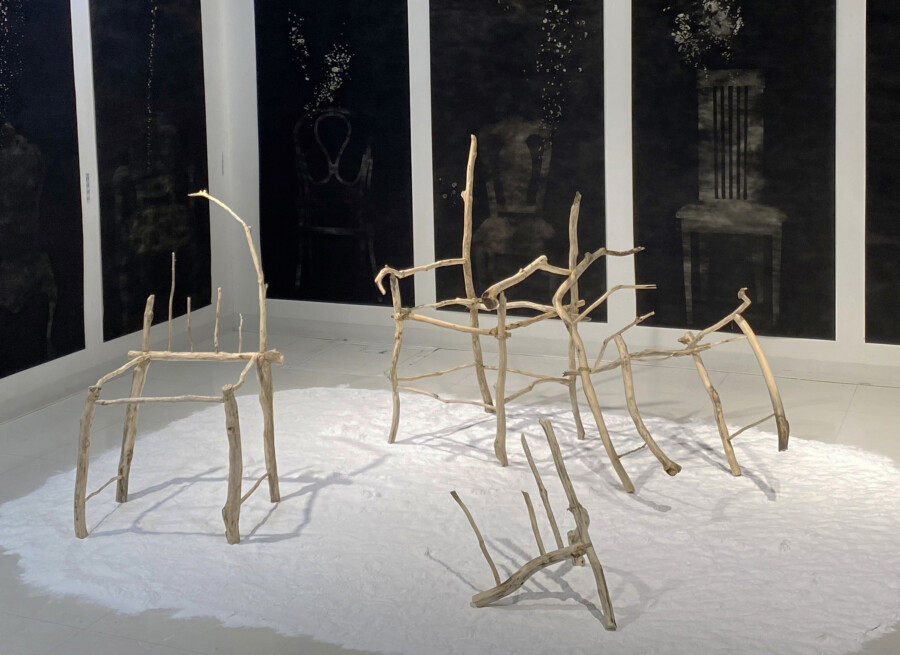

Miya Hannan: RESONANCE
I view the world as composed of layers and linkages of history—a chain of lives and events that lead from one to the next. I believe that landscapes hold honest records of these histories. Using images of nature and physical objects as storytellers, my work seeks to preserve the stories of people and histories that are nearly forgotten or at risk of being lost. In Japan, where I grew up, the souls of the dead are believed to live on, spirits exist within nature, and the land retains its destiny. People inherit the histories of the land on which they live. I am interested in the relationship between humanity and the information embedded in nature.
Burning, which appears in many Japanese rituals, including cremation, transforms physical forms into something transient. The Law of Conservation of Mass states that matter may change form but can neither be created nor destroyed. Similarly, the dead remain with the living in the form of memory, story, knowledge, and genetic code. The dead continue to exist around us, creating layers of history that shape the present. My work depicts my view of death as another form of being alive.
Exhibition dates: May 1-29, 2026
Gallery hours:
Thurs – Fri 2-6pm
Sat – Sun 12-4 pm
This program is supported by a grant from the Athena Fund.